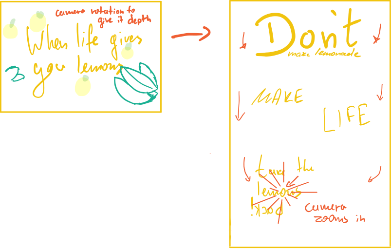
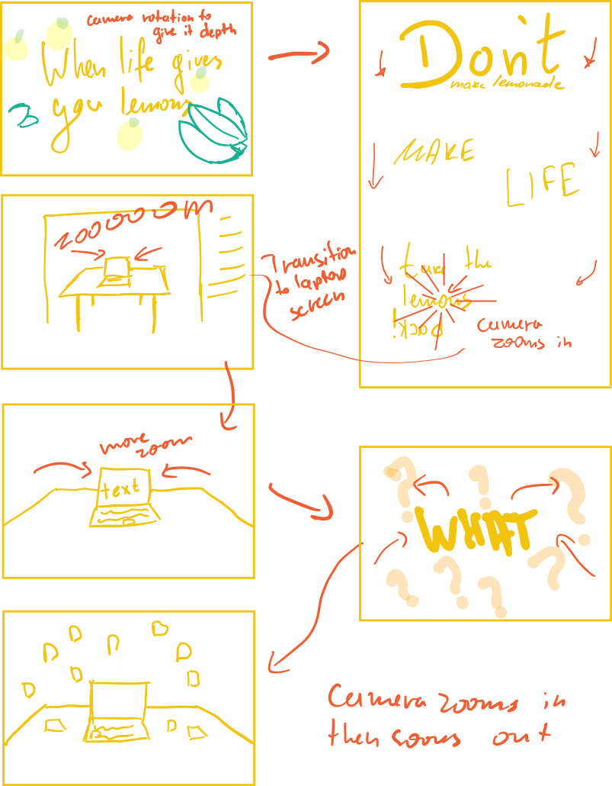

Storyboards
An in-depth look
As the project started, we had to transition from a very practical-based brief to a completely digital one. After spending more than a month working on my workbook, I was thrilled to do something digital.
I spent a long time trying to find a piece of text that I could animate. Looking back I should've spent longer looking into potential speeches or even poems, as the text I ended up using proved itself challenging. Nevertheless, I made the best of what I had. When life gives you lemons...
I spent a long time trying to find a piece of text that I could animate. Looking back I should've spent longer looking into potential speeches or even poems, as the text I ended up using proved itself challenging. Nevertheless, I made the best of what I had. When life gives you lemons...
The image above is the very first storyboard I tried to create with the final text I chose. It features the fictional character, "Cave Johnson" who is in front of a stage, giving a speech. That was part of the original direction that I wanted to take my animation. Cave Johnson is the voice behind the speech and is also a game from the game Portal 2. Portal 2 is a puzzle game, with a sense of humour and difficult puzzle-solving.
The concept I had in my head was that I wanted the animation to be an advert, which could promote the game digitally. That's the reason everything was so literal and emphasised the speech with visuals.
The animation then continues with flowing text and literal visuals which I planned to have various transitions. It all culminates with lemons raining from the sky in a crazy, chaotic finale.
The concept I had in my head was that I wanted the animation to be an advert, which could promote the game digitally. That's the reason everything was so literal and emphasised the speech with visuals.
The animation then continues with flowing text and literal visuals which I planned to have various transitions. It all culminates with lemons raining from the sky in a crazy, chaotic finale.
Rethinking the storyboard
One day I was browsing around a website called pexels.com (they provide royalty-free stock images) where I found the following photograph of a lemon tree.
That photograph then inspired me, and I opened up photoshop. I then separated the leaves and placed them on different layers, which allowed me to add a depth effect later on in After Effects.
At that time I had only that image to work with. However, it proved itself an invaluable addition to my ideation process. I started animating with it, trying to get the ideas out of my head and on my computer. Then I sketched up a quick draft of what I had done so far, and what I wanted to do with it.

I was in the studio when an idea struck me. I swiftly moved a desk in position, took a photo of it with my tablet and drafted a few quick ideas. The idea was simple - display a green-screen on my laptop monitor, and then I could record a video moving around the desk and place anything on the screen and/or in the background in post production.

My quick sketch then lead on to multiple videos from multiple angles that I could use. From there I could take those videos and apply them to my final storyboard.
In conclusion, the storyboard helped me visualise my ideas quickly. However, I mostly created my storyboards after I had done a piece of animation. That slowed me down a lot. I had to first spend some time to animate and only then I could illustrate it in my storyboards.
The many iterations I had for my storyboards proved useful, as I had a reference and guidance of what my aims were. As my animation progressed I decided not to storyboard the ending as I had it clear in my head. Plus, I wanted to experiment further with my animation.
The many iterations I had for my storyboards proved useful, as I had a reference and guidance of what my aims were. As my animation progressed I decided not to storyboard the ending as I had it clear in my head. Plus, I wanted to experiment further with my animation.